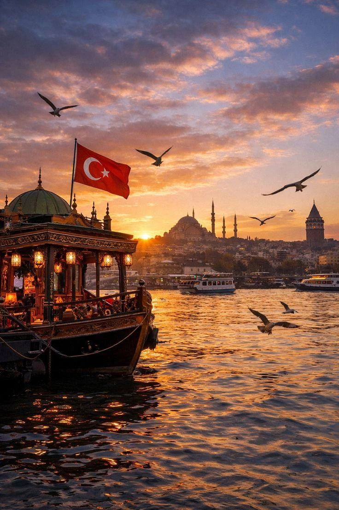

TÜRKİYE • EUROPE & ASIA • GLOBAL TRADE
The world's only major city spanning two continents, connecting Europe and Asia through commerce, culture, tourism and investment.
Istanbul is Türkiye's largest city and economic powerhouse. Situated on both the European and Asian sides of the Bosphorus, it has served as a strategic center of trade, culture and diplomacy for centuries.
Today, Istanbul remains one of the world's most influential cities, attracting entrepreneurs, investors, tourists, digital professionals and multinational businesses.
Trade, logistics and entrepreneurship.
Historic landmarks and cultural attractions.
Housing, transport and daily expenses.
Property investment and residency options.
History, architecture and local experiences.
Growing sectors and future opportunities.
Few cities hold Istanbul's strategic position. The city connects Europe, Asia, the Middle East and the Black Sea region, making it one of the world's most important commercial crossroads.
Its location continues to support trade, logistics, aviation, tourism and international business activities.
Major sectors include finance, tourism, logistics, manufacturing, construction, technology, retail, transportation and international trade.
Istanbul remains the center of Türkiye's economy and one of the fastest-growing metropolitan markets in the region.
Popular destinations include Hagia Sophia, Blue Mosque, Grand Bazaar, Topkapi Palace, Galata Tower, Bosphorus Strait, Dolmabahçe Palace and Istiklal Avenue.
The city offers a unique blend of Ottoman heritage, modern development, world-class dining and vibrant nightlife.
Infrastructure projects, technology investments, transportation upgrades and expanding international trade continue strengthening Istanbul's role as a global city.
Its strategic location and diverse economy position it as a key gateway between Europe, Asia and the Middle East.